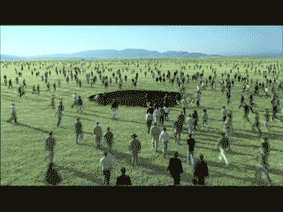
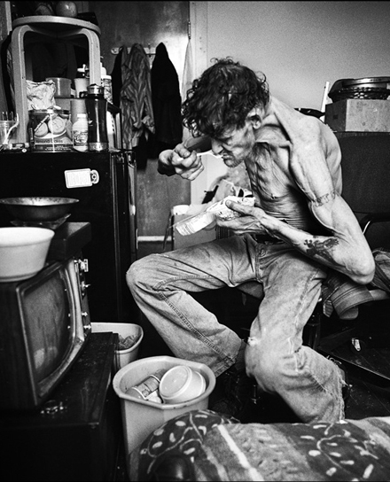
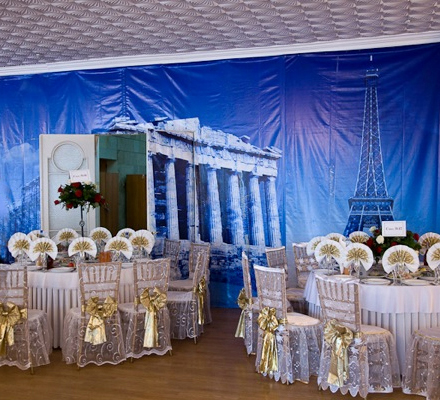

Διπλούν κάταγμα του χρόνου και του χώρου.
Julio Cortasar
| |

Το γράψιμο δεν είναι και τόσο δύσκολο πράγμα. Το μόνο που έχεις να κάνεις είναι να καθίσεις μπροστά σε μια γραφομηχανή και να ανοίξεις μια από τις φλέβες σου.
Red Smith
| |
Αν καθίσει κανείς και καλοεξετάσει τα πράγματα που υπάρχουν σε τούτη τη ζωή, θα διαπιστώσει ότι παντού επικρατεί τρέλα και παραλογισμός.
Οι περισσότεροι κακοί απολαμβάνουν τα αγαθά που μάζεψαν με την αδικία και ένα σωρό έντιμοι άνθρωποι ζούνε μέσα στην στέρηση και την εξαθλίωση.
Αριστοφάνης (446 – 380 π.χ.)
| |
Η αμφιβολία δεν είναι ευχάριστη κατάσταση, αλλά η βεβαιότητα είναι εξωφρενική.
Βολταίρος
| |
Όταν είμαι άρρωστος, καλώ αμέσως το γιατρό μου, αυτός με εξετάζει, συζητάμε, μου γράφει τα φάρμακα, εγώ δεν τα παίρνω και είμαι πάλι υγιής.
Μολιέρος
| |
Η αναζήτηση είναι το σύμβολο όλων των ανθρώπων που βγαίνουν τη νύχτα χωρίς συγκεκριμένο σκοπό, η δικαίωση όλων αυτών που τους αρέσει να καταστρέφουν τις πυξίδες.
Julio Cortasar
| |
Οι μετανάστες ήταν πάντα πρόβλημα σε αυτή τη χώρα. Ρωτήστε και τους ινδιάνους.
R.Orben
| |
Δεν πιστεύω στο μεμονωμένο έργο. Νομίζω πώς τα έργα ορισμένων συγγραφέων συγκροτούν ένα όλο, όπου το κάθε ένα φωτίζεται από τα υπόλοιπα, και όπου όλα μεταξύ τους ανταλλάσσουν βλέμματα.
Άλμπερ Καμύ
| |
Υπάρχουν άνθρωποι που δεν θα είχαν ερωτευτεί ποτέ τους αν δεν είχαν ακούσει να γίνεται λόγος για τον έρωτα.
| |
Ποτέ δεν κατάλαβα τι είναι πραγματικά ευτυχία παρά μόνο όταν παντρεύτηκα, αλλά τότε ήταν πολύ αργά.
Max Kauffman
| |

Καλύτερα να λένε για σένα : «Γιατί δεν την πήρε αυτή τη θέση;» παρά να λένε : «Γιατί του την έδωσαν;»
Jean De La Bruyere
| |
Πολλά πράγματα γίνονται τόσο δικά μας που τα ξεχνάμε.
Antonio Porchia
| |
Η αναζήτηση της ευτυχίας είναι η βασικότερη αιτία δυστυχίας.
Eric Hoffer
| |
Η δύναμη της τύχης συνομολογείται μόνο από τους δυστυχισμένους, διότι οι ευτυχείς αποδίδουν όλη την επιτυχία τους αποκλειστικά στη σύνεσή τους και την αξία τους.
Τζόναθαν Σουίφτ
| |
Κάποτε που ο Γεώργιος Β΄ ταξίδευε στην Αγγλία, όταν σταμάτησε σε ένα πανδοχείο, ο ιδιοκτήτης του έφερε ένα αυγό και του ζήτησε ένα αστρονομικό ποσό. «Θα πρέπει να σπανίζουν πολύ τα αυγά σε αυτή τη περιοχή» είπε ο βασιλιάς. «Όχι τα αυγά, οι βασιλιάδες σπανίζουν» είπε ο πανδοχέας....
| |
Λένε πως η οργή είναι το τελευταίο πράγμα που γερνάει μέσα στον άνθρωπο.
Αλκαίος (611 – 580 π.χ.)
| |
Όταν αφήνω ένα πράγμα, δεν θα ήθελα να πάρω ένα άλλο, για να μην το αφήσω και αυτό.
Antonio Porchia
| |
Όταν βρεθείς με το μέρος της πλειοψηφίας, ήρθε καιρός να αλλάξεις.
Mark Twain
| |
Κανείς δεν μπορεί να γλείψει τον αγκώνα του. Είναι αδύνατο να τον ακουμπήσεις με τη γλώσσα σου.
| |
Περίπου το 70%(αν όχι το 100%)των ανθρώπων που διάβασαν αυτή τη λίστα προσπάθησαν να γλείψουν τον αγκώνα τους...
| |
Το χαμόγελο που στέλνεις ξαναγυρνά σε σένα.
Ινδική σοφία
| |
Αυτός που έχει φτιάξει την κλειδαριά
έχει φτιάξει και το κλειδί.
| |
Όταν έχουμε ευτυχία έχουμε τα πάντα, ενώ όταν αυτή λείπει κάνουμε τα πάντα για να την έχουμε.
Επίκουρος
| |

Η χάρη είναι στο κορμί ό,τι και η γνώση στο πνεύμα.
| |
Πολιτική είναι η τέχνη του να εμποδίζεις τους ανθρώπους να ανακατεύονται με ότι τους αφορά.
Paul Valery
| |

Αν τον φίλο σου δεν τον απαντήσει κάποιο μεγάλο κακό, ικανοποιήσου με τις μικρές του αποτυχίες.
| |
Ποτέ μην τα βάζεις μ’ έναν ηλίθιο. Είναι βέβαιο ότι θα σε ρίξει στο επίπεδό του και θα σε νικήσει εκ πείρας.
| |
Δεν είναι φοβερό αν σας προσέβαλλαν, κορόιδεψαν ή λήστεψαν. Φοβερό είναι αν εσείς δεν μπορείτε να τα ξεχάσετε.
Κομφούκιος
| |
Kαλό Παράδεισο!!! "Και στα δικά μας"!!!
Aυτή την ευχή θ' ακούσει κανείς όχι μόνον σ' έναν γάμο, αλλά... και σε μία κηδεία. Σε κηδεία; Bεβαίως. Ίσως ήδη κάποιοι από τους αναγνώστες, οι οποίοι είχαν κάποια στιγμή στη ζωή τους την ευλογία να επισκεφθούν το Άγιον Όρος, να έχουν ακούσει μοναχούς να εύχονται ο ένας στον άλλον «και στα δικά σου», μετά την τελετή της νεκρώσιμης ακολουθίας κάποιου αδελφού τους.
Απο χριστιανικό site !!!!! | |
Αν πάρεις εκδίκηση για ένα κακό που σου έκαναν, χάνεις την ικανοποίηση να παραπονιέσαι για την αδικία.
Τσεζάρε Παβέζε
| |
Αποτελεί αναμφισβήτητο γεγονός ότι οι άνθρωποι αρέσκονται να πιστεύουν σε όσα ψέματα τούς παρουσιάζουν ως διανοητικά και πολιτιστικά ανώτερους από τους άλλους.
E. R. Friedlander
| |
Η ελευθερία δεν αξίζει τίποτα, αν δεν συμπεριλαμβάνει την ελευθερία να κάνεις λάθη.
Μ.Γκάντι
| |
Μην έχεις το άγχος της τελειότητας. Δεν πρόκειται να την φτάσεις ποτέ.
Salvador Dali
| |
Παρ’ όλες τις ανακαλύψεις της επιστήμης και τη συσσώρευση της ανθρώπινης γνώσης, ο ποιητής δεν διαθέτει παρά ότι διέθετε και ο Όμηρος.
Henry David Thoreau
| |
Κουτσομπολιό είναι όταν ακούς κάτι που σ’ αρέσει για κάποιον που δεν σ’ αρέσει.
Earl Wilson
| |

Δεν έχω κοιλιά, έχω ένα προστατευτικό στρώμα γύρω από τους γραμμομένους κοιλιακούς μου μύες.
| |
Ο άνθρωπος δεν δημιουργήθηκε για να δουλεύει. Απόδειξη γι' αυτό είναι το γεγονός ότι η εργασία τον κουράζει.
Βολταίρος
| |
Όταν στη Ρώμη ξέσπασαν ταραχές ο Λεύκιος Οπίμιος υποσχέθηκε : «Όποιος φέρει το κεφάλι του Μάρκου Φλάβιου καρφωμένο στο δόρυ του θα του δώσω το βάρος του σε χρυσάφι». Όταν σταμάτησαν οι αιματηρές συγκρούσεις, ο Λεύκιος βγήκε στη πόρτα του σπιτιού του και μπροστά του είδε δεκάδες ανθρώπους με κεφάλια καρφωμένα στα δόρατά τους.
| |
Όλοι οι νόμοι και όλα τα δίκαια επιτρέπουν να απωθεί ένας την βία δια της βίας.
Κικέρων
Μάλλον προετοιμάζονται για το Δεκέμβριο.
| |

έπιασε δουλειά η προστασία του πολίτη....
Καθώς οι κοινωνίες παρακμάζουν , παρακμάζει μαζί τους και η γλώσσα . Οι λέξεις χρησιμοποιούνται για να συγκαλύπτουν και όχι για να διαφωτίζουν τις πράξεις : " απελευθερώνεις " μια πόλη καταστρέφοντάς την . Οι λέξεις έχουν στόχο να μπερδέψουν , έτσι ώστε την ώρα των εκλογών οι άνθρωποι θα ψηφίσουν ενάντια στα συμφέροντά τους .
ΓΚΟΡ ΒΙΝΤΑΛ
| |
Επανέρχεται ο θεσμός του αστυνομικού της γειτονιάς..... | |

Το μεθυστικό στην κακογουστιά είναι η αριστοκρατική της ευχαρίστηση να μην αρέσει στους άλλους.
Μπωντλαίρ
| |
Ανάμεσα στα δικαιώματα, υπάρχει ένα που ξεχάστηκε και που για την κατάδειξή του ενδιαφέρεται όλος ο κόσμος.
- το δικαίωμα να αντιφάσκεις με τον εαυτό σου.
Μπωντλαίρ
| |
Για έναν ποιητή, το θέμα δεν είναι να πει ότι βρέχει. Το θέμα είναι να δημιουργήσει βροχή.
Paul Valery
| |
Έχω κουραστεί από όλες αυτές τις ανοησίες ότι η ομορφιά είναι επιδερμική. Δηλαδή τι θα θέλατε; Ένα αξιολάτρευτο πάγκρεας;
Jean Kerr
| |
Ο άνθρωπος που δεν έχει ιερό ούτε όσιο και που έχει χάσει το αίσθημα του φόβου, αυτός έφτασε στο ζενίθ της αναίδειας.
Μένανδρος
| |
Το «εγώ» είναι μισητό. Αλλά, εννοείται ότι μιλάμε για το «εγώ» των άλλων.
Paul Valery
| |
Ενώ οι προηγούμενοι έφυγαν σαν κύριοι..... | |
Σύμπασα η φύση αγαλιά για τη νέα κυβέρνηση. | |
Η νέα κυβέρνηση εξασκείτε εντατικά για τις 100 πρώτες μέρες.
| |
|
35 readers online
|